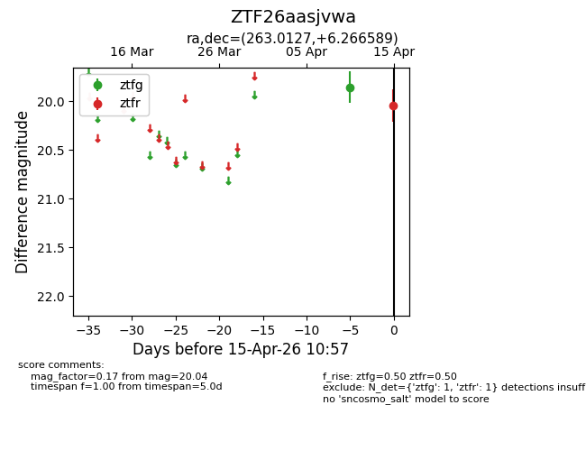
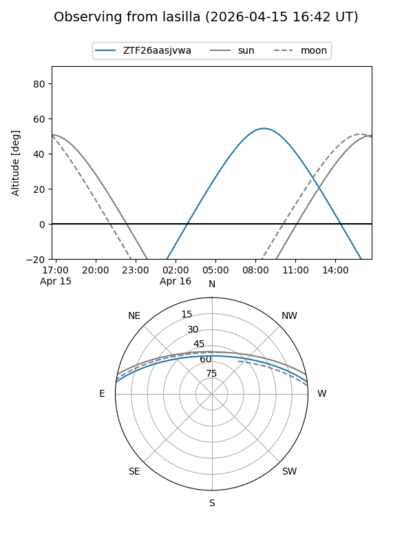
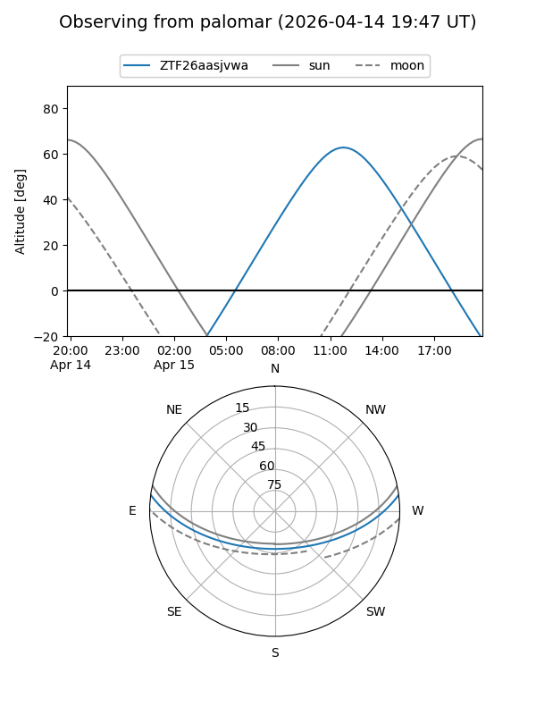
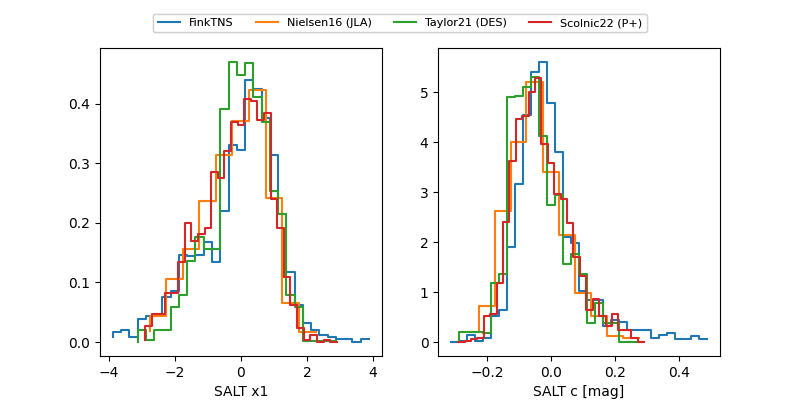

ZTF26aasjvwa
Target ZTF26aasjvwa at 2026-04-15 11:09
Aliases and brokers:
FINK: link
Lasair: link
ALeRCE: link
alt names
ZTF26aasjvwa (ztf,fink_ztf)
Coordinates:
equatorial (ra, dec) = 263.0127,+6.26659
equatorial (HMS+DMS) = 17:32:03.04,+06:15:59.72
galactic (l, b) = (29.4593,+20.49490)
Flags:
Photometry:
last ztfg=19.86, ztfr=20.04
1 ztfg, 1 ztfr detections
Lightcurve

Visibility


Additional plots
